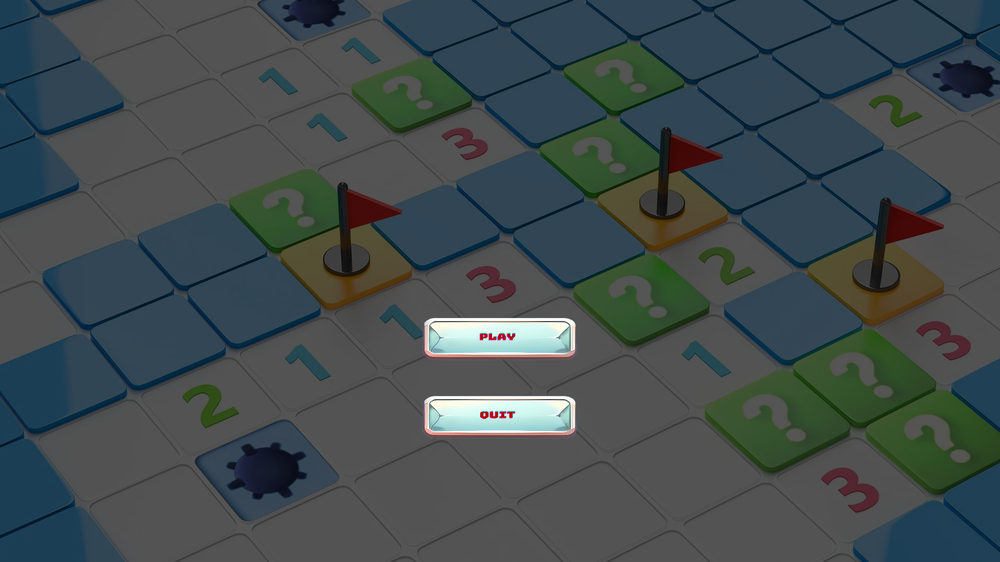
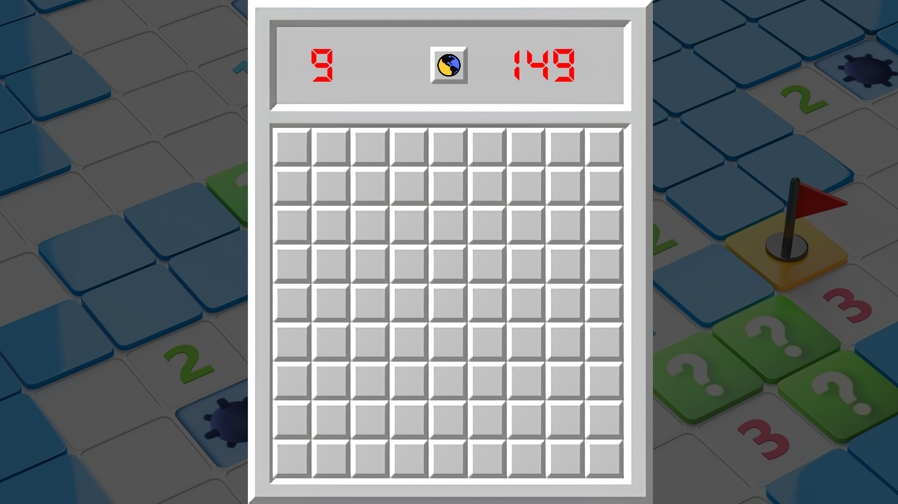

Project Gallery



Building a Framework, Not Just a Game
If I were just building a Minesweeper clone, the entire game would likely live in one or two massive files. Instead, I built an underlying custom engine framework that acts as the foundation to run the game.
By heavily focusing on separation of concerns, I achieved the following architectural milestones:
-
Game-Agnostic Core Systems: I developed standalone systems like the
TimeManager(handling frame-independent delta time via<chrono>) and theEventPollingManager(an input abstraction trackingPRESSED,HELD, andRELEASEDstates). These systems do not contain any Minesweeper-specific logic and can be dropped directly into any other C++ project. -
The Orchestrator (
GameLoop): The main engine runner acts as a high-level state machine. It delegates updates and renders without ever knowing what a "Mine" or "Flag" is, cleanly separating the application lifecycle from the gameplay logic. -
Reusable UI Components: I engineered a highly reusable
Buttonclass utilizingstd::functionfor callback registration. Instead of hardcoding behavior, the UI components simply invoke injected logic. This allows the exact same class to dynamically act as a "Play", "Quit", or "Restart" button based on its parent manager. -
Strict Memory Ownership: The architecture avoids global singletons and enforces strict RAII (Resource Acquisition Is Initialization) memory lifecycles. The
GameLoopexplicitly owns and destroys the managers, theGameplayManagerowns theBoard, and theBoardsafely deallocates its 2D heap array ofCellpointers—guaranteeing zero memory leaks upon exit.
Algorithmic Problem Solving
Beyond the system architecture, I implemented robust C++ algorithms to ensure the gameplay felt authentic and highly optimized:
-
Eradicating Cyclic Dependencies: Large C++ projects often suffer from massive compile times and circular include errors. I strictly utilized Forward Declarations (e.g.,
namespace Gameplay { class Board; }) in all header files, reserving#includedirectives exclusively for the.cppimplementation files to keep the header footprint incredibly light. -
Cache-Friendly Data Layout: Instead of relying on fragmented heap structures, the Minesweeper grid is initialized as a row-major 2D array (
cell[numberOfRows][numberOfColumns]). This aligns with C++ memory layout standards, maximizing CPU cache hits during algorithmic operations. -
Advanced Grid Algorithms: I implemented a randomized procedural mine placement algorithm utilizing
std::random_device, paired with a dynamic exclusion zone to guarantee a "Safe Start" on the first user click. Furthermore, I utilized a Depth-First Search (DFS) recursive flood-fill algorithm to instantly reveal interconnected empty cells.